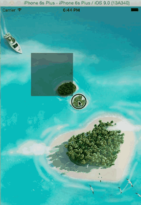

1.5.8 屏幕截屏
原理：
将layer上的内容，渲染到 该上下文即可
- layer 需要 渲染 ！！
/**
* 开启一个图片上下文
* CGSize size : 开启的上下文大小
* BOOL opaque ：不透明度。 YES：表示不透明 ；NO 表示透明
* CGFloat scale：如果为0，scale为设备的scale
*/
UIGraphicsBeginImageContextWithOptions(self.view.bounds.size, NO, 0);
CGContextRef ctx = UIGraphicsGetCurrentContext();
/**
* 将 layer的内容 渲染到 上下文中
*/
[self.view.layer renderInContext:ctx];
/**
* 生成新的图片
*/
UIImage *newImg = UIGraphicsGetImageFromCurrentImageContext();
/**
* 关闭上下文
*/
UIGraphicsEndImageContext();
/**
* 压缩写入文件
*/
NSData *jpegData = UIImageJPEGRepresentation(newImg, 1.);
[jpegData writeToFile:@"/Users/mac/Desktop/text.jpg" atomically:YES];
1.5.9 手选截图区域
- 效果

效果分析：
1> 手指 可以拖动一个 选择区域，该区域为黑色，半透明
2> 手指 拖动结束后，截取 选中的图片，并将其设置为背景
3> 手指拖动结束后，选择框 消失
实现分析：
1> 拖动区域
- 在view上添加 拖动手势，起点为 开始拖动点，每次拖动移动时，更新view 的frame
- 结束拖动时，需要 移除
- 下一次开始拖动时，需要重新创建 =》懒加载
2> 背景图片变化：
- 使用ImageView 做背景
- 拖动结束后，重新生成图片 作为新的背景即可
代码（注意点：）
1> cutview 懒加载 的使用
2> static CGPoint startP; static CGPoint currentP; 需要设置 为 static 或者 property
3>
frame= (0,0,100,100) 与 (100,100,-100,-100)效果一致
- (void)viewDidLoad {
[super viewDidLoad];
/**
* 添加一个屏幕大小的 imgview
*/
UIImageView *imgView = [[UIImageView alloc] init];
imgView.frame = self.view.frame;
imgView.image = [UIImage imageNamed:@"test.jpg"];
NSLog(@"%@",NSStringFromCGRect(imgView.frame));
self.imgView = imgView;
[self.view addSubview:imgView];
/**
* 添加拖动手势
*/
UIPanGestureRecognizer *panGesture =
[[UIPanGestureRecognizer alloc] initWithTarget:self
action:@selector(pangesture:)];
panGesture.delegate = self;
[self.view addGestureRecognizer:panGesture];
}
- (void)pangesture:(UIPanGestureRecognizer *)pangesture{
/**
* 需要使用 static 或者 可以 使用 property
* 由于 每次 手指 拖动，都会来到 该方法，如果 是 局部变量，则值被改变
*/
static CGPoint startP;
static CGPoint currentP;
/**
* 开始位置
*/
if (pangesture.state == UIGestureRecognizerStateBegan) {
startP = [pangesture locationOfTouch:0
inView:self.view];
}// 每次 手指拖动后，都会到这
else if (pangesture.state ==
UIGestureRecognizerStateChanged){
currentP = [pangesture locationOfTouch:0
inView:self.view];
/**
* 根据手指 当前 位置 重新 设置 剪切区域的 frame
* 这里 startP.x，startP.y 作为 x，和 y对于 结束点 在 开始点 左侧 这种 情况 同样适用因为
frame= (0,0,100,100) 与 (100,100,-100,-100)效果一致
*/
self.cutView.frame = CGRectMake(startP.x, startP.y,
currentP.x -startP.x, currentP.y-startP.y);
}// 手指 拖动结束
else if (pangesture.state ==
UIGestureRecognizerStateEnded){
// 重新生成 图片
UIGraphicsBeginImageContextWithOptions(self.view.bounds.size, NO,0);
CGContextRef ctx = UIGraphicsGetCurrentContext();
UIBezierPath *path = [UIBezierPath bezierPathWithRect:self.cutView.frame];
[path addClip];
[self.imgView.layer renderInContext:ctx];
UIImage *newImg = UIGraphicsGetImageFromCurrentImageContext();
UIGraphicsEndImageContext();
self.imgView.image = newImg;
//移除
[self.cutView removeFromSuperview];
self.cutView = nil;
}
}
// 懒加载 方式
- (UIView *)cutView{
if(!_cutView){
_cutView = [[UIView alloc] init];
_cutView.frame = CGRectZero;
_cutView.backgroundColor = [UIColor blackColor];
_cutView.alpha = 0.5;
[self.view addSubview: _cutView];
}
return _cutView;
}